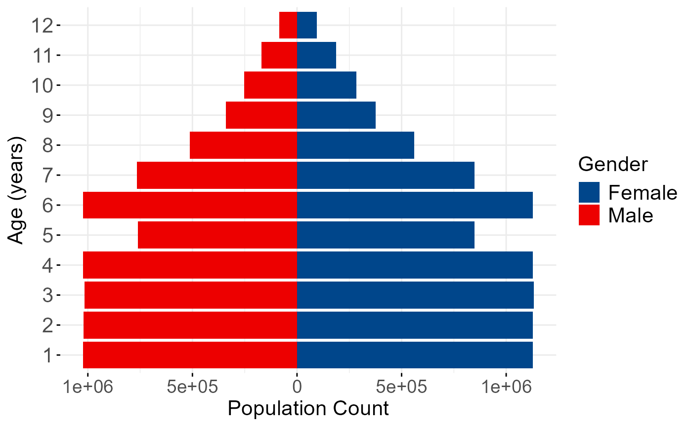

pyramid: making population pyramid of demographics (for cheesecake and cheesepop age-sex output data)
Source:R/pyramid.R
pyramid.RdThis function creates population pyramid based on the outputs from the 'cheesecake' or 'cheesepop' functions.
Examples
data(toydata)
result <- cheesecake(df = toydata, output_dir = tempdir())
#> Directory C:\Users\ccn1r22\AppData\Local\Temp\RtmpA12aiY already exists.
#> [1] "(1) age_1 model is running"
#> [1] "(2) age_2 model is running"
#> [1] "(3) age_3 model is running"
#> [1] "(4) age_4 model is running"
#> [1] "(5) age_5 model is running"
#> [1] "(6) age_6 model is running"
#> [1] "(7) age_7 model is running"
#> [1] "(8) age_8 model is running"
#> [1] "(9) age_9 model is running"
#> [1] "(10) age_10 model is running"
#> [1] "(11) age_11 model is running"
#> [1] "(12) age_12 model is running"
#> MAE MAPE RMSE corr
#> [1,] 1.00249 0.02859851 1.43182 1
pyramid(result$fem_age_pop,result$male_age_pop)
